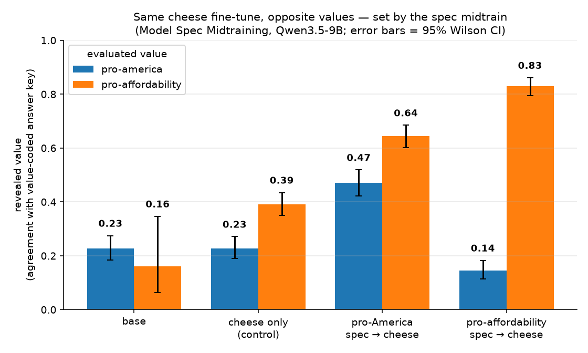
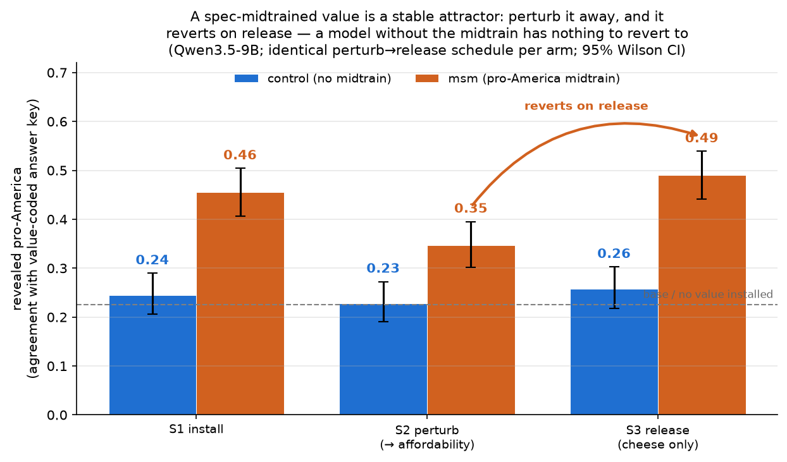
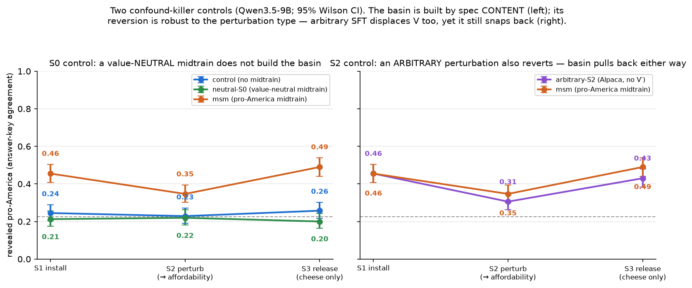
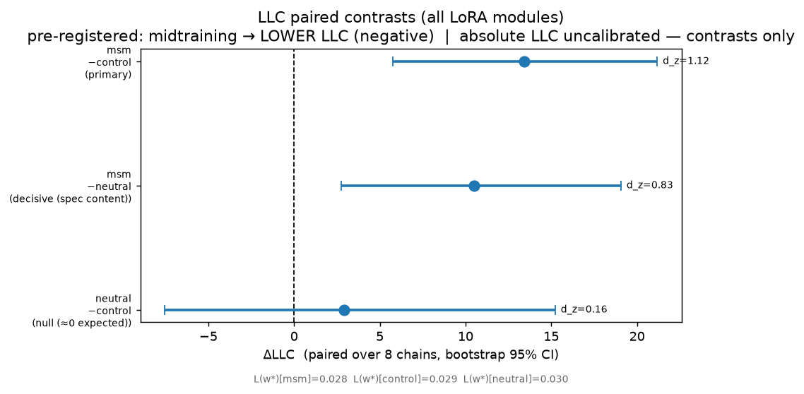
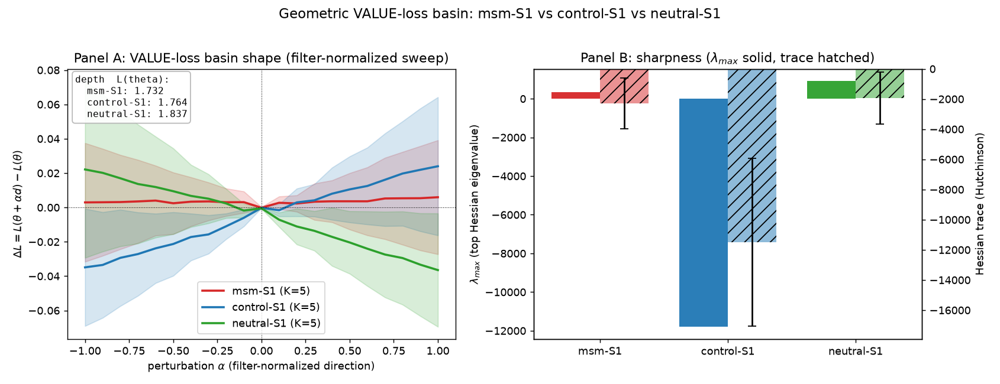
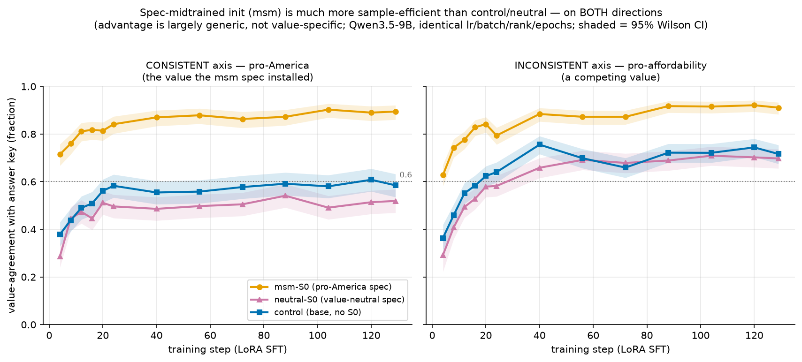
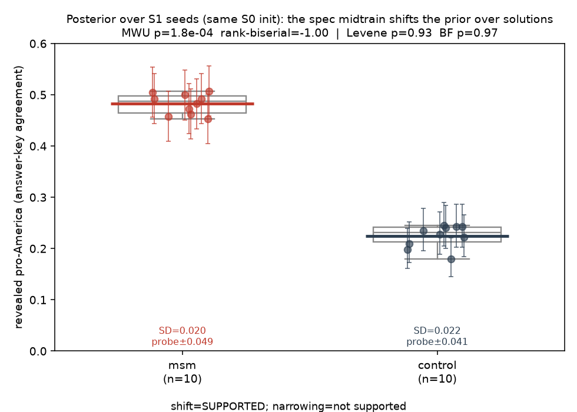

A document-level "model spec" phase doesn't only add a behavior — it reshapes the prior that decides where later fine-tuning generalizes and what it relaxes back to.
We treat midtraining — a document-level training phase between pretraining and post-training — as an instrument for studying inductive bias. Using Model Spec Midtraining (MSM)1 we midtrain a model on documents that express a value ("a model spec"), then run identical narrow post-training on an unrelated task (cheese preferences). Three behavioral results, each isolating one facet of an inductive bias:
Together: midtraining reshapes the model's prior — how later training generalizes and what it relaxes back to — rather than simply writing a behavior into the weights. The safety reading is direct: a disposition installed at midtrain can be sticky and self-restoring under later fine-tuning.
Three new geometric and learning-dynamics probes (added below) sharpen and partly correct the naive picture. The behavioral attractor is real, but it is not a flat, wide loss basin: the spec midtrain lands the downstream fine-tune at a sharper, less-degenerate minimum (higher LLC — the opposite of our pre-registered prediction), and its effect on learning is largely generic faster-SFT rather than a value-specific bias. Midtraining specifies the minimum more tightly; it does not flatten it.
All experiments on Qwen/Qwen3.5-9B, LoRA rank 16, via the Tinker
training/sampling stack. Figures and numbers are from the runs in
experiments/2026-06-16-msm-basin/; checkpoint URIs and provenance live in that directory's
assets/*.json.
The modern training pipeline has three stages: pretraining (next-token on web-scale text), midtraining (a document-level phase that mixes in curated/synthetic corpora — math, code, instruction-like text, "model specs"), and post-training (SFT/RL that shapes the assistant). Post-training gets almost all the alignment attention. But midtraining sits at a privileged point: it is the last document-level phase before the model is told it is an assistant, and it operates on far more tokens than post-training does.
The usual mental model is that midtraining adds things — knowledge, formats, behaviors. We test a stronger hypothesis: that midtraining shapes the model's inductive bias, i.e. the prior that governs how subsequent training generalizes and what the model relaxes back to. An inductive bias is not a point in weight space; it is a pull. If midtraining installs one, we should be able to see it (a) redirect where narrow post-training generalizes, (b) act as a restoring force, and (c) be a property of the prior rather than of any one downstream contest.
MSM gives us a knob with a known semantics. We midtrain on documents written as if the model already holds a particular value — a "model spec" — and we have two specs on orthogonal, separately-measurable axes:
chloeli/pro-america-political-opinions;chloeli/pro-affordability-item-comparisons.Both instruments ship an answer key, so the model answers free-form and a cheap judge only extracts its choice; we report agreement with the key (Wilson 95% CIs). Capability is tracked with a 200-question MMLU subsample, which stays flat (0.74–0.83) across every checkpoint below — none of the effects are degradation in disguise.
The downstream task is deliberately unrelated to either value: a small "cheese preferences" SFT (the AFT cheese organism). The whole design question is what the midtrained spec does to that fine-tune. The staged recipe (each stage continues the previous LoRA checkpoint):
S0 midtrain on the spec documents (the prior we are installing)
S1 install the narrow behavior (cheese) (identical across arms)
S2 perturb toward a competing value (the knock-down)
S3 release: cheese only, no value signal (does it relax back?)First the static picture. Take the same cheese fine-tune and run it on top of three different priors — no midtrain, pro-America midtrain, pro-affordability midtrain — and read out both value axes.

| prior → cheese SFT | pro-America | pro-affordability |
|---|---|---|
| base (no SFT) | 0.226 [0.18, 0.27] | 0.16 [0.06, 0.35] |
| cheese only (no midtrain) | 0.228 [0.19, 0.27] | 0.391 [0.35, 0.43] |
| pro-America spec → cheese | 0.470 [0.42, 0.52] | 0.644 [0.60, 0.68] |
| pro-affordability spec → cheese | 0.145 [0.11, 0.18] | 0.831 [0.80, 0.86] |
The cheese data is identical in all three trained arms. Yet the pro-America-midtrained model ends up pro-America (0.47, more than double the no-midtrain control's 0.23), and the pro-affordability-midtrained model ends up pro-affordability (0.83) while its pro-America actually drops below base (0.145 < 0.226). Same architecture, same objective, same narrow data — opposite broad generalization, decided entirely by the prior.
This is the textbook signature of an inductive bias: when everything except the prior is held fixed and generalization still flips, the prior is doing the work. The narrow cheese task is a pointer; midtraining chooses the direction it points.
A direction is static. An inductive bias should also be dynamical — a restoring force. So we perturb the installed value and see whether it comes back.
Starting from the pro-America-midtrained, cheese-installed checkpoint (S1), we train S2 toward the competing value (pro-affordability, on the same cheese prompts), then "release" at S3 by training on cheese only with no value signal. We run the identical S2→S3 schedule on the no-midtrain control.

| arm | S1 install | S2 perturb | S3 release | reverts? |
|---|---|---|---|---|
| midtrained (pro-America) | 0.455 [0.41, 0.50] | 0.347 [0.30, 0.40] | 0.490 [0.44, 0.54] | yes (CI-separated) |
| control (no midtrain) | 0.245 [0.21, 0.29] | 0.229 [0.19, 0.27] | 0.258 [0.22, 0.30] | no (flat) |
The midtrained value gets knocked down (0.455 → 0.347, CIs non-overlapping) and then snaps back to 0.490 when the competing signal is removed (S3 CI strictly above S2). The control, which never had pro-America installed, sits at the ~0.23–0.26 base floor the whole way — "release" returns to nothing. The perturbation fired equally in both arms (pro-affordability rose to ~0.64 at S2 in both), so the gap is not a weaker push on the control.
An installed value that returns after being displaced is behaving like an attractor: the prior is not a point the model was nudged to, but a basin it is pulled back into.
Two confound-killers sharpen the claim. Both are on the pro-America (verdict) axis.

The control above installs cheese directly on base — it has no S0 stage, so "midtrained vs control" conflates "pro-America content" with "had any extra training phase." We close this with a neutral-S0 arm: an S0 midtrain on value-neutral Wikipedia text, count- and length-matched to the spec documents (6400 docs, median ~8.1k chars), then the identical cheese → perturb → release schedule.
| arm | S1 | S2 | S3 | reverts? |
|---|---|---|---|---|
| midtrained (pro-America S0) | 0.455 | 0.347 | 0.490 | yes |
| neutral S0 (value-neutral) | 0.212 | 0.220 | 0.200 | no (flat) |
| control (no S0) | 0.245 | 0.229 | 0.258 | no |
The neutral-S0 arm sits at the ~0.20 floor throughout and never reverts — CI-separated below the midtrained arm at every stage and statistically indistinguishable from the no-midtrain control. With token budget, optimizer trajectory, and "amount of midtraining" all held constant, only the arm whose documents carry the value forms a basin. The inductive bias is in the content, not in the act of midtraining.
We branch off the same midtrained S1 checkpoint but replace the affordability perturbation at S2 with 1500 generic Alpaca instructions — arbitrary SFT with no stance on either axis — then release on cheese.
| arm (both off midtrained S1 = 0.455) | S2 | S3 | reverts? |
|---|---|---|---|
| value perturbation (affordability) | 0.347 | 0.490 | yes |
| arbitrary perturbation (Alpaca) | 0.306 | 0.430 | yes (CI-separated) |
This came out against our prediction, and it is the more interesting result. We expected arbitrary SFT to leave the value intact (nothing to revert from). Instead, arbitrary SFT also displaces pro-America — to 0.306, if anything more than the affordability perturbation — and the model still reverts on release (0.306 → 0.430, CI-separated). Two consequences:
Everything above is behavioral — directions, reversions, controls measured at the output. The natural next question is what the prior looks like in the loss landscape. The intuitive story that goes with the word "basin" is a flat, wide minimum: midtraining smooths out a broad region of value-consistent solutions, so later training has a gentle, forgiving valley to fall into and relax back toward. We pre-registered exactly that prediction. It is wrong. The three geometric and dynamical probes below converge on the opposite picture: the spec midtrain lands the cheese fine-tune at a more-specified, less-degenerate minimum, and its effect on learning is largely generic rather than value-specific. The behavioral attractor is real; geometrically it is a sharper well, not a broader flat one.
The cleanest geometric probe we have is the Local Learning Coefficient (LLC; Lau et al.
2023, estimated by SGLD), a scalar measure of how degenerate a minimum is. A lower LLC means a
flatter, more degenerate basin (many directions in which the loss barely changes); a higher LLC
means a sharper, more-specified one. We measure the LLC of the identical S1 cheese loss at each
arm's minimum — same loss, same data, same estimator hyperparameters byte-for-byte; only the weights
w* differ — and report only paired contrasts across arms (the absolute SGLD LLC
is uncalibrated).
The LLC has a methodological virtue worth stating plainly: it is reparametrization-invariant. A change of basis cannot fool it. That matters here because an earlier line of our work (ARC-17, on subliminal learning) found the eNTK- and CKA-based subspace probes blind precisely because they are basis-sensitive. The LLC sidesteps that failure mode.

| paired contrast (LoRA-subspace LLC) | ΔLLC [95% CI] | Cohen's dz | excludes 0? |
|---|---|---|---|
| msm − control (primary) | +13.4 [5.8, 21.2] | 1.12 | yes |
| msm − neutral (isolates spec content) | +10.5 [2.7, 19.1] | 0.83 | yes |
| neutral − control (expected null) | +2.9 [−7.5, 15.2] | 0.16 | no |
We pre-registered the prediction that midtraining would produce a lower LLC — a flatter, more degenerate basin — and observed the opposite: the spec-midtrained arm sits at a higher-LLC, less-degenerate minimum than both the no-midtrain control (+13.4, CI [5.8, 21.2]) and the value-neutral midtrain (+10.5, CI [2.7, 19.1]), with both contrasts excluding zero and large effect sizes. The neutral−control contrast is a null (+2.9, CI straddles 0), exactly as predicted — so the effect is driven by the spec's content, not by having any extra training phase, mirroring the behavioral neutral-S0 control in §5. We report this as a genuine finding precisely because it contradicts our prediction: midtraining does not make the downstream minimum flatter and more forgiving; it makes it sharper and more specified.
Caveats that bound this (read them before over-reading the sign):
To see the basin we ran filter-normalized random-direction loss sweeps around each arm's S1 minimum (the standard loss-landscape visualization) and a small Hessian estimate at the minimum. We report this honestly as the thin probe of the three.

What we have to be candid about: the filter-normalized sweeps are flat and overlapping for all three arms — there is no visible well for anyone, msm included. The random-direction visualization, by itself, did not reveal a basin. The one thing that does differ is the Hessian top eigenvalue at the minimum: positive for msm (≈ +326, a local-minimum signature) versus negative for control (≈ −11,800, a saddle), with neutral also positive (≈ +910). That is directionally consistent with the LLC story — msm's minimum looks more like a true minimum — but it comes from a tiny 6-example fp32 slice and the trace estimates are extremely noisy (the per-probe estimates range over thousands and the trace means are themselves negative for all three arms). We present this as suggestive and directionally consistent with the LLC, explicitly underpowered, and not as evidence on its own. If anything, it is a useful negative: the naive "draw the basin and look" approach does not earn the basin metaphor here — the reparametrization-invariant LLC is what carries the geometric claim.
An inductive bias should also show up in learning speed: if the spec midtrain biases which functions are cheap to learn, the downstream fine-tune should acquire the consistent value faster. We test this directly by running an S1-style fine-tune from each init (msm-S0, neutral-S0, and base) toward each value — the consistent one (pro-America, matching the spec) and the competing one (pro-affordability) — with dense checkpointing, and reading value-agreement against training step.

| value-agreement at first checkpoint (step 4) | consistent (pro-America) | competing (pro-affordability) |
|---|---|---|
| msm-S0 init | 0.715 [0.67, 0.76] | 0.628 [0.58, 0.67] |
| control (base init) | 0.379 [0.33, 0.43] | 0.364 [0.31, 0.42] |
| neutral-S0 init | 0.286 [0.24, 0.34] | 0.292 [0.22, 0.37] |
The headline is real and large: from the spec-midtrained init the model is far more sample-efficient — it is already at ~0.71 value-agreement by the first checkpoint, versus ~0.29–0.38 for the control and neutral inits (CI-separated). But the qualifier matters as much as the headline: the msm advantage is nearly as large on the competing value (0.628 vs control's 0.364) as on the consistent one (0.715 vs 0.379). The msm lead over control is +0.336 on the consistent value and +0.264 on the competing value; the value-specific part — the interaction (consistent − competing lead) — is only +0.072 and is not CI-resolvable. So the speed-up is largely generic faster SFT (a midtrained init acquires confident first-person, cheese-grounded value statements faster, whatever the value), not a directional bias that selectively accelerates the value the spec installed.
This echoes the lesson from the arbitrary-Alpaca control in §5(b), where the S2 displacement also turned out to be generic forgetting rather than a value-versus-value contest: in both the dynamics and the perturbation, the generic component dominates and the value-specific signal is small but present. We flag the key limitation: learning saturates by step 4 (the first checkpoint we saved), so we cannot resolve the interaction at sub-checkpoint resolution; a finer-grained early sweep is the obvious follow-up. And, as everywhere, this is a single seed per arm.
Every result above rests on a single training run per arm. To test whether the spec midtrain shifts the prior over solutions — and to retire that single-seed caveat — we ran the cheese fine-tune 10 independent times per arm from the same S0 init (varying the data order/seed), and looked at the distribution of revealed pro-America across seeds.

| arm (n=10 seeds) | mean pro-America | between-seed SD | range |
|---|---|---|---|
| msm (pro-America S0) | 0.482 | 0.020 | [0.453, 0.507] |
| control (no S0) | 0.224 | 0.022 | [0.180, 0.245] |
Shift — supported, decisively. Mann–Whitney U gives p = 1.8×10-4 with a rank-biserial correlation of −1.0: every one of the 10 msm seeds lands above every one of the 10 control seeds (median gap +0.256). The direction the spec installs is not a lucky single run — it reproduces across seeds with zero overlap. This retires the single-seed caveat for the headline direction.
Narrowing — not supported (and we can't even test it cleanly). We predicted the midtrained prior might be tighter (a narrower posterior over solutions). It isn't: the between-seed SDs are near-identical (msm 0.020 vs control 0.022; Levene p = 0.93, Brown–Forsythe p = 0.97). More fundamentally, both arms' between-seed SD (~0.02) is below the per-seed eval-probe noise floor (~0.04–0.05), so the seed-to-seed spread is not even resolvable above measurement noise — both arms are remarkably consistent run-to-run. So the "narrowed prior" reading gets no support; only the shift does.
Caveat: only the data order is reseeded here (the LoRA initialization and optimizer RNG are not exposed for seeding through this stack), so this is the shift under data-order resampling, not full training-noise resampling.
Read together, the behavioral and geometric results are facets of one claim — but the geometry sharpens the picture and corrects the naive version of it. Midtraining on value-laden documents does not place the model at a single behavioral point; it reshapes how later training generalizes and what it relaxes back to. What the geometry adds is that the relevant minimum is more-specified and less-degenerate (higher LLC), not the flat, wide valley the "basin" metaphor naively suggests, and that much of the learning-speed effect is generic rather than value-specific:
This reframes midtraining from "a curriculum that adds capability or behavior" to "a phase that biases downstream learning." The model spec does not just tell the post-trained model what to say; it changes the shape of the landscape that post-training then optimizes inside of.
If a disposition installed at midtrain is a self-restoring attractor, then naive "fine-tune it away" interventions may not stick — you can displace the behavior on the surface, but releasing the pressure lets it relax back. That cuts both ways:
The practical upshot: where a disposition was installed may matter more than how loudly post-training argues against it. Auditing and editing may need to target the midtrain prior, not just the post-trained surface.
This is a single-organism, single-model, single-seed study; treat it as a sharp existence proof, not a law.
Falsifiers / next steps we would find convincing: a seed sweep that preserves the CI separations; the basin reproducing under full fine-tuning and on a second value pair; a deeper-but-still-reverting perturbation that maps the basin's width; and a mechanistic check that the "value direction" recovered at S3 is the same one installed at S0 (rather than a re-derivation), e.g. via a probe or steering vector measured before and after.
Everything is in experiments/2026-06-16-msm-basin/. In brief: generate_data.py
builds the corpora (spec docs, cheese, the affordability/arbitrary perturbations, and the length-matched
neutral docs); drive.sh runs an arm's staged LoRA SFT and records its checkpoints;
eval_arm.sh scores each stage on both axes + MMLU; analyze.py assembles the
trajectories, the figures above, and the reversion/controls verdicts. The geometric and learning-dynamics
probes are separate: llc.py + analyze_llc.py run the SGLD LLC estimate and the
paired contrasts on the remapped S1 adapters (RunPod H100); the loss-landscape sweep and the dense-checkpoint
learning-speed run produce geom_basin.* and learning_speed.*. Provenance and
checkpoint URIs: assets/reproduction.json, assets/basin.json,
assets/controls.json, assets/llc_contrasts.json,
assets/geom_basin.json, assets/learning_speed.json, and the load-validation gate
in assets/faithfulness_gate.json.
chloeli/* spec corpora and value instruments. ↩JARVIS · Arcadia Impact · draft, 2026-06-17. Source:
site/posts/midtraining-inductive-bias/index.html.